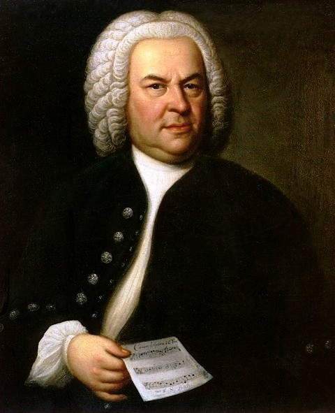
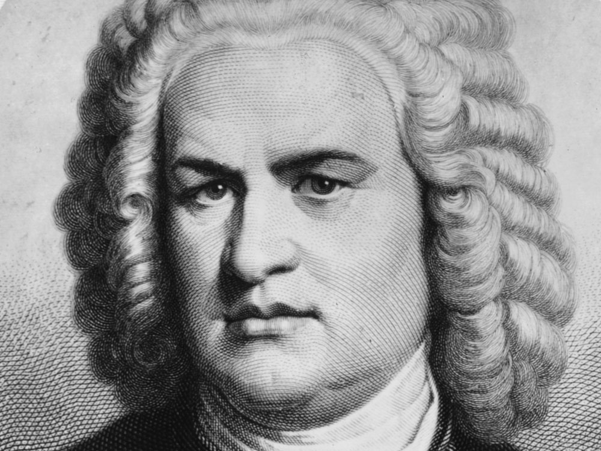

Johann Sebastian Bach
Johann Sebastian Bach, a virtuoso organist, shied away from the spotlight of the public. His sacred music, organ and choral works, and other instrumental music had a complexity and genius that few people would ever hope to compete with. Bach's use of counterpoint was brilliant and innovative; the immensity of his complex style still amazes musicians today.

Bach was born in Eisenach in 1685 and was taught to play the violin and harpsichord by his father. Orphaned at 10, Bach was taken in by his oldest brother, Johann Christoph. Bach attained a position at the Michaelis monastery at Luneberg in 1700 after displaying his excellent singing voice. After taking a post in Weimar in 1703 as a violinist, Bach became organist at the Neue Kirche in Arnstadt (1703-1707). His relationship with the church council was tense because he often neglected his responsibilities, preferring to compose his own works and practice the organ. When he was granted leave, he often returned MUCH later than he was supposed to, much to the dismay of the council of the church. Bach composed his famous Toccata and Fugue in D minor (BWV 565) while in Muhlhausen, then took a post for the Duke of Sachsen-Weimar in 1708, serving as organist and playing in the orchestra. He wrote many organ compositions including the famous Orgel-Buchlein. Bach left Weimar and secured a post in December 1717 as Kapellmeister at Cothen.

In 1720, Bach's wife died, leaving him with four children. Later, he met his second wife, soprano Anna Wilcke, whom he married in December 1721 and would have 13 children. Bach became Kantor of the Thomas School in Leipzig in 1723 and held the post until his death. It was here, in Leipzig, that he composed a great amount non-secular and secular cantatas. Bach, however, became dissatisfied with is job because it paid very little and the job became a huge burden and so, took on may various positions elsewhere that allowed him greater flexibility to compose and travel as he pleased. Among Bach's last works was his 1749 Mass in B minor before he died from diabetes on July 28, 1750.
Bach is best known for his contrapuntal style and complex harmonies and melodies. Almost no one has come close to matching Bach's mathematically, contrapuntal style, earning him the title as one of the greatest composers of all time. His works are often tightly woven with a strong sense of sonority (regarding major and minor keys). While many composers wrote the framework for compositions, Bach would often write in all the embellishments and ornamentation for the parts he wanted leaving little interpretation to the performer.